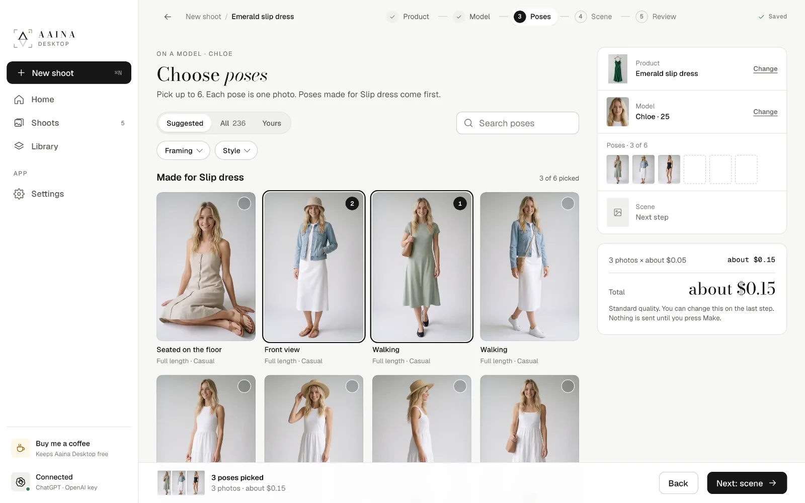
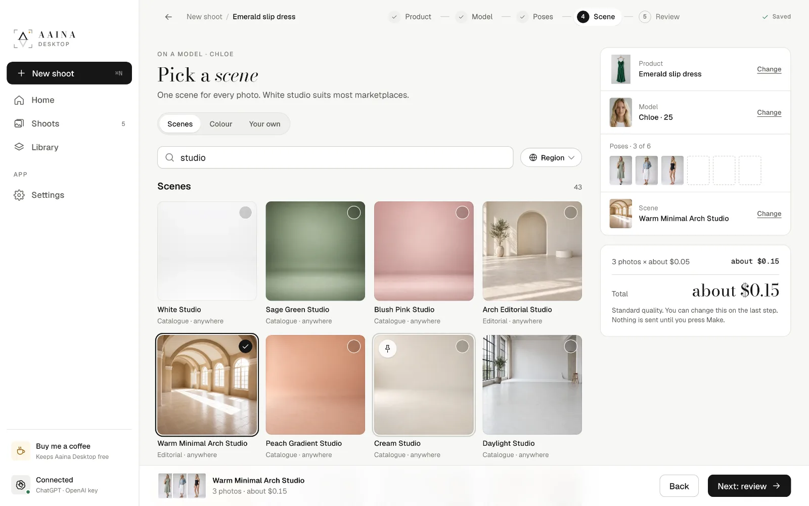
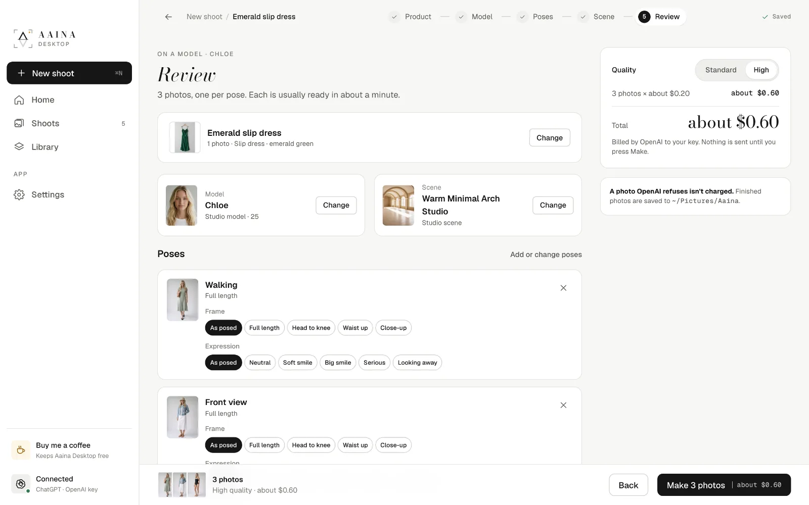
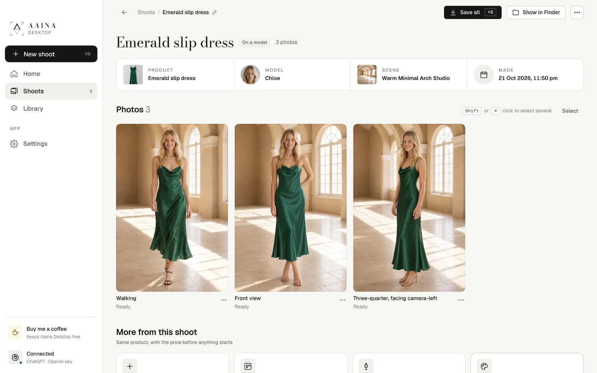
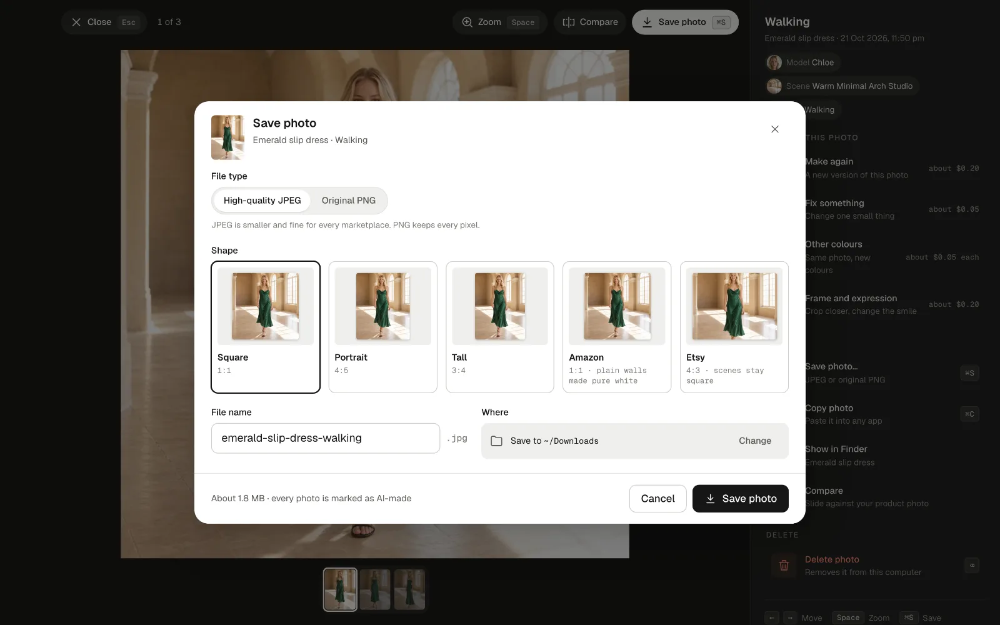
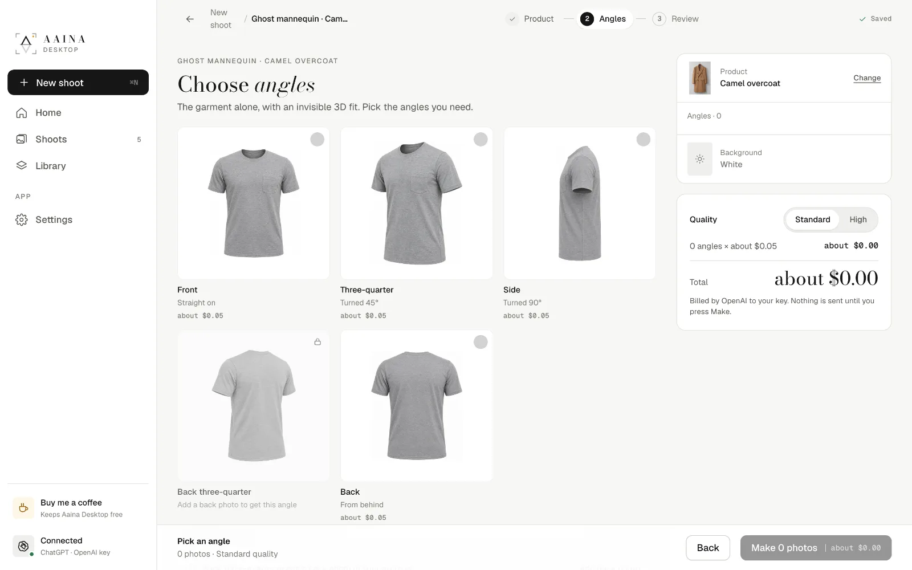
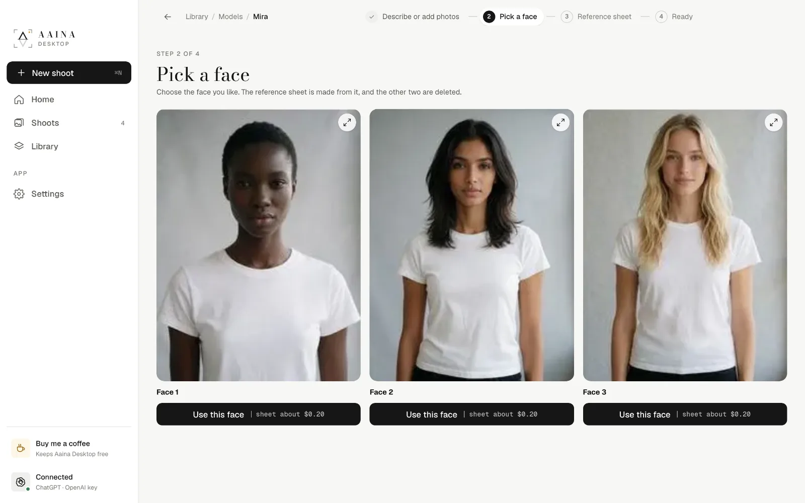
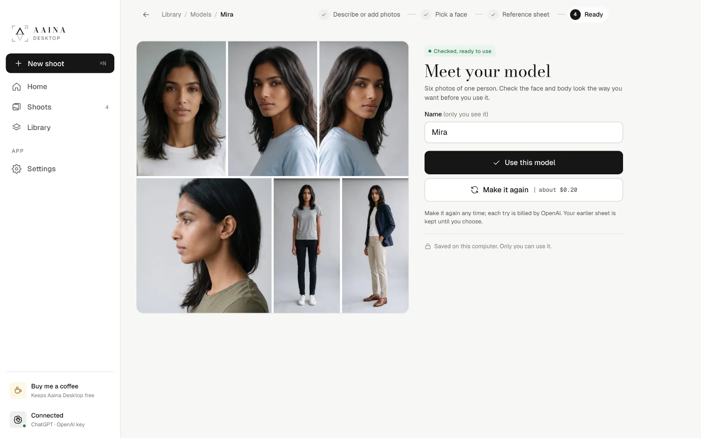
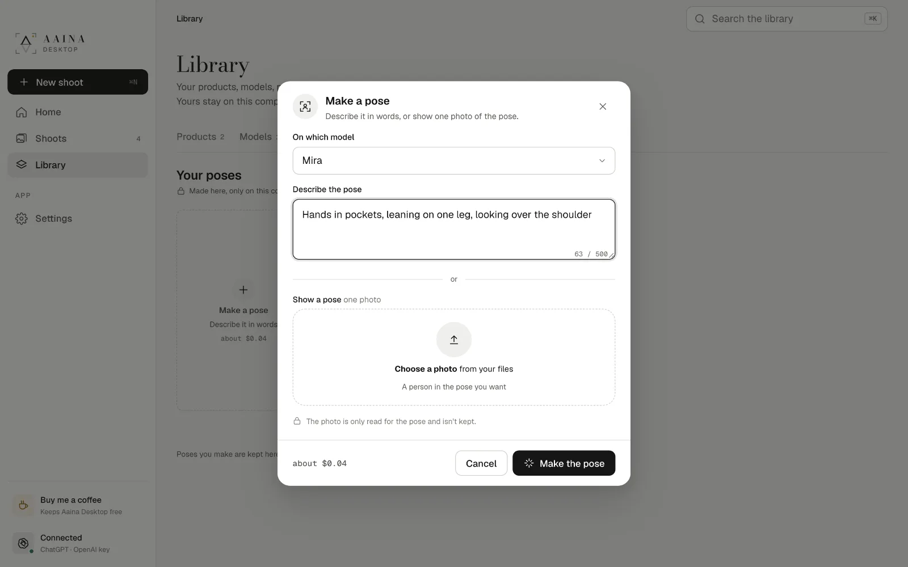
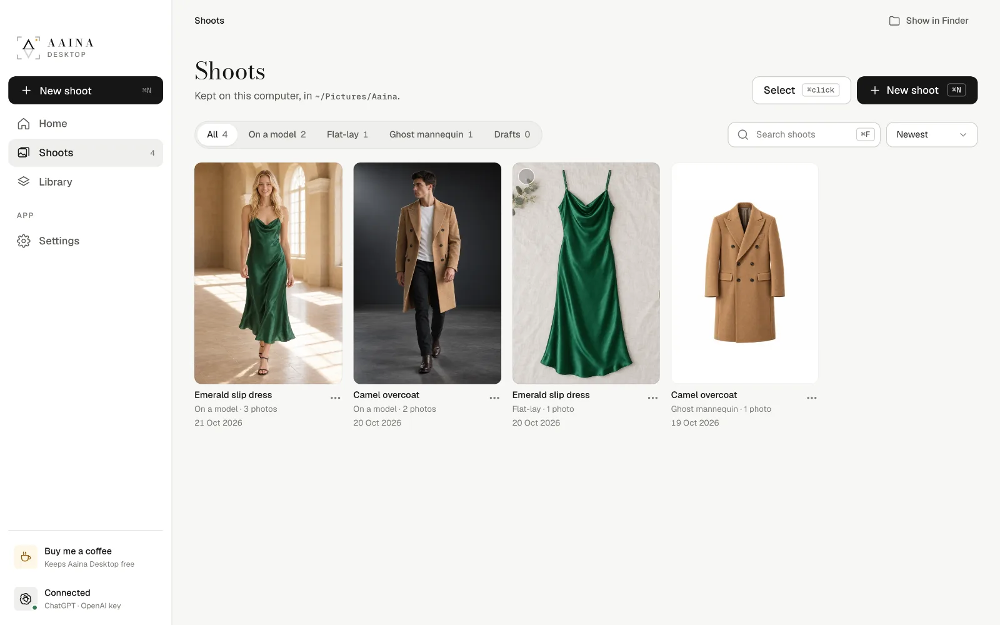

From connecting OpenAI to your first finished photos, your own models, poses and scenes, and keeping your work safe.
The whole app in about three minutes, with sound. Every photo in it was made with Aaina Desktop.
Why it's free
Good product photos sell, but a photoshoot with a model, a studio and a photographer is out of reach for most people starting out. Aaina is a studio that makes those photos with AI.
We used AI to build Aaina Desktop: a part of Aaina's features, rebuilt as a free, open-source app, so anyone starting a business, or anyone without money for photoshoots or subscriptions, can have studio-quality photos of what they sell from day one.
There is nothing to buy from us. You use your own OpenAI account and pay OpenAI only for the photos you make, a few cents each. Everything you make stays on your computer.
1. Getting started
Download the app for Mac, Windows or Linux from the home page. There is no account to make. The first builds are not signed yet: on a Mac, open the app once, then choose Open Anyway in System Settings, Privacy and Security; on Windows, choose More info, then Run anyway.
Photos are made by OpenAI's image model with your own OpenAI key, so you pay OpenAI directly, at their price, with nothing added. You can connect in two ways, and use both:
Sign in with ChatGPT (optional). Before it makes a photo, the app reads your product: what it is, its colour, fabric and details, and who it is for. Signed in, every reading uses your ChatGPT plan, at no cost to your key. If ChatGPT can't answer, the key reads instead.
Your OpenAI key makes the photos, poses, scenes and models. Without ChatGPT it also does the readings, for a fraction of a cent each. It is kept in your computer's keychain and only sent to OpenAI.
ChatGPT plans can't make pictures in other apps yet, so photos need the key. The app will switch photos over when OpenAI allows it.
Get an OpenAI key
Go to platform.openai.com and sign up or sign in. It is OpenAI's developer site, a separate account from a ChatGPT subscription, though you can use the same email.
Open Settings, Billing, and add a little credit. $5 is plenty to start: about 100 standard photos.
Open API keys, choose Create new secret key, name it "Aaina Desktop", and copy it. OpenAI shows it only once.
In Aaina Desktop, paste it into API key and press Check key. "Key works" means you are ready.
OpenAI may ask a new account to verify the organisation before it makes pictures; the app shows the link if so. You can set a monthly spending limit in OpenAI's billing settings, and delete a key any time.
2. Your first shoot
A shoot is one product on one model, in one scene, in up to six poses; each pose is one photo. Start with New shoot, or drop a product photo on Home.
Add your product
One clear photo is enough: the whole product, even light, a plain background. A back photo and a close-up make the result more faithful. The app reads it and shows What we see; correct anything that is wrong.
Pick a model
The best fits for your product come first. Search in plain words or filter by gender, age, look, body and collections.
Choose poses
Poses made for your kind of product come first. Filter by framing or style, or search. Pick up to six.

Pick a scene
A studio or a place from the catalogue, a plain colour (free), or a scene you made. White studio is the safest for marketplaces.

Review and make
Set the frame and expression for each pose, choose Standard or High quality, and see the total before anything is sent. Photos arrive in about a minute each.


3. Edit and save photos
Open a photo to check it. Compare slides it against your product photo. Every change makes a new version and keeps the earlier ones:
Make again: a new version from the same choices.
Fix something: one small change in plain words, the rest stays.
Other colours: the same photo with the product in up to six other colours.
Frame and expression: crop closer or change the smile.
Save photo as a high-quality JPEG or an original PNG, square, portrait, tall or in a marketplace's own shape. Every saved photo is marked as AI-made inside the file; the picture is not changed. A photo OpenAI refuses is not charged.

4. Ghost mannequin and flat-lay
Ghost mannequin: the garment alone in its worn 3D shape, from the front, three-quarter, side and back (a back photo makes the back exact). Flat-lay: laid flat and shot from above, clean, neatly folded or styled. Start them like any shoot.

5. Your own models
Make a model only you can use: describe a person and pick one of three faces, or use 1 to 3 photos of a real adult who has agreed to be your model. The app makes a reference sheet, six photos of the same person, that keeps the face and body the same in every photo.


6. Your own poses and scenes
Describe a pose in words, or show one in a photo (only read, never kept). Describe a place for a scene, optionally with a reference photo. Scenes never have people in them. Each is about $0.04, and is kept in your Library for every shoot.

7. Shoots and Library
Shoots lists everything you made: filter, search, save or delete several at once, and open each shoot's folder. Library keeps your products, models, poses and scenes ready for any shoot.

8. Settings, backup and privacy
Change your connection, default quality, how many photos are made at once, the photos folder and theme; keep the catalogue for offline use; check for updates. Back up everything to one file and restore it on any computer.
Stays on your computer: products, shoots, photos, own models, settings and your key. Sent to OpenAI: your product photos, plus the model, pose and scene for each photo you make. Sent to Aaina: nothing; the app only downloads the public catalogue. No account, no tracking, no ads.
Costs
A photo, standard quality
about $0.05
A photo, high quality
about $0.20
Fix something, or each other colour
about $0.05
A ghost mannequin angle or flat-lay style
about $0.05
Your own pose or scene
about $0.04
Your own model (3 faces, then the sheet)
about $0.15 + $0.20
Reading a product
free with ChatGPT
Billed by OpenAI to your own account. Aaina Desktop is free. The longer guides are on GitHub.